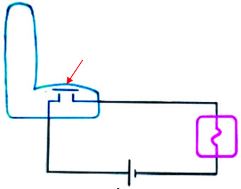
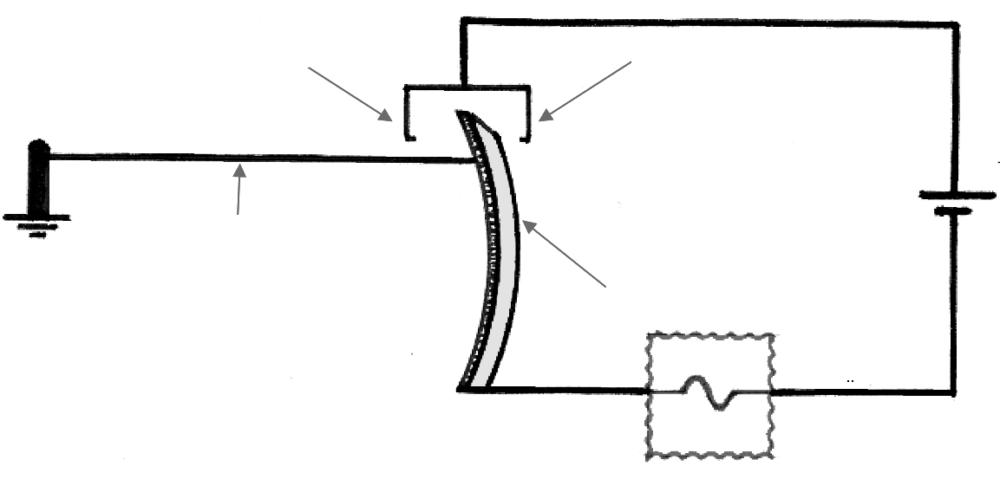
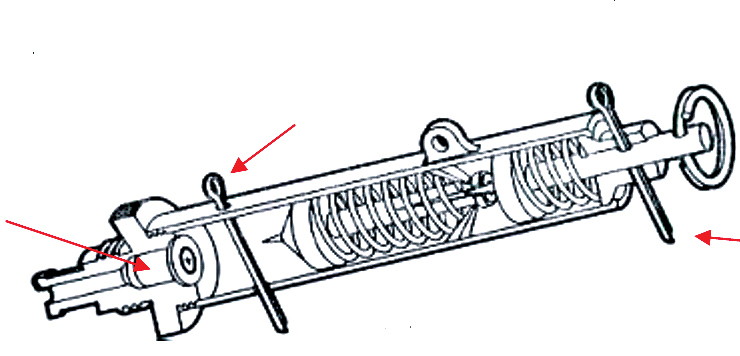
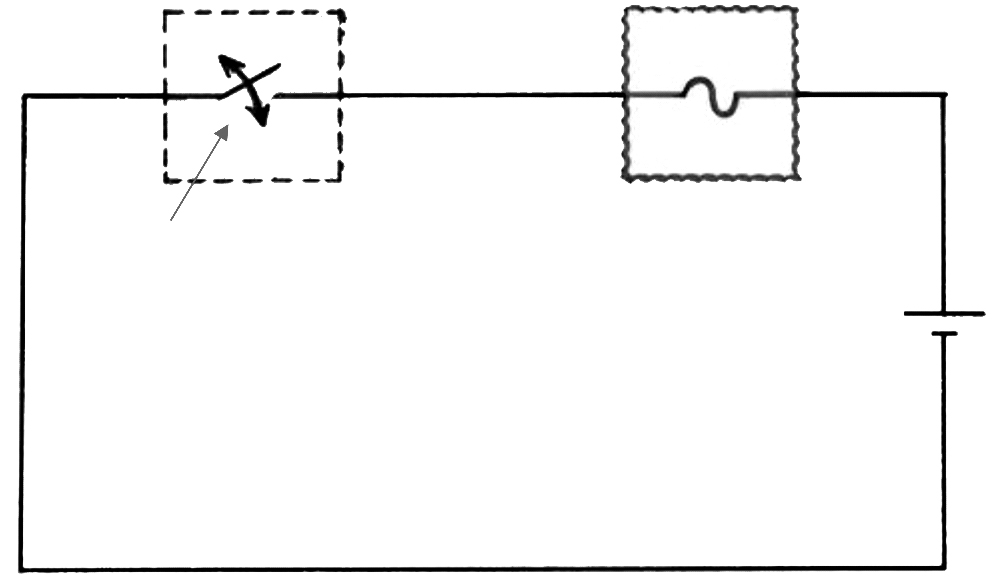
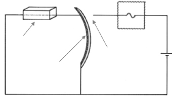
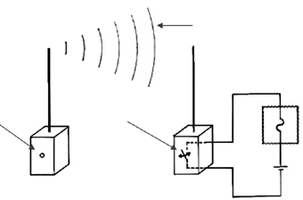
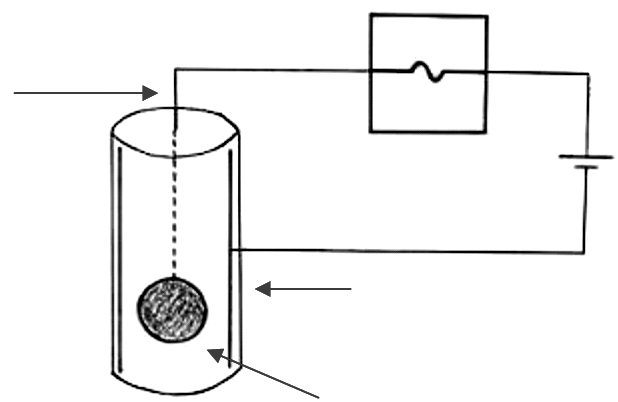
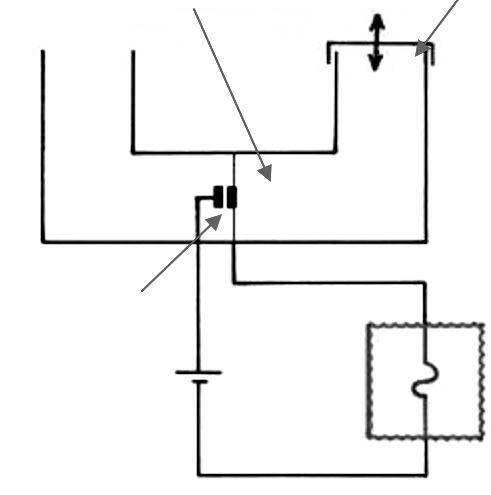

Para que um artefato explosivo funcione de forma eficaz, é necessário que apresente ao menos um mecanismo de acionamento e a carga explosiva. O mecanismo de acionamento é o responsável pela iniciação da carga explo siva e pode apresentar, entre outros, os seguintes princípios básicos: Mecânicos - baseado no fato de que alguns explosivos são sensíveis a choque, fricção, etc. São os casos de utilização de sistemas de percussão semelhantes aos que ocorrem nas espoletas dos cartuchos de armas de fogo. Químico - baseado no fato de que alguns compostos químicos, ao se unirem, produzem uma reação exotérmica incendiária. Elétrico - a corrente elétrica, ao percorrer um condutor, provoca o seu aque cimento (efeito Joule), que pode ser capaz de iniciar um explosivo sensível ao calor. Combinado - qualquer das combinações dos princípios anteriores.
Os dispositivos que utilizam esse mecanismo de acionamento exigem pressão para soltar um mecanismo de percussão, fechar um circuito elétrico ou inflamar-se. São muito utilizados sob assentos de veículos, estofados em geral, tapetes, colchões, assoalhos, etc. Podem ser controlados de acordo com a pressão exercida.

Chave de pressão Explosivo Bateria Resistor
Figura 5 - Mecanismo de pressão em assentos.
Quando alguém se senta no assento, o circuito elétrico é fechado e ocorre a explosão.
Os mecanismos podem apresentar pressões mínimas, ou em níveis elevados, como no caso de minas antipessoal e antitanque, ou seja, uma pessoa não acio naria uma mina antitanque. O mesmo esquema pode ser montado por descompressão.
O mecanismo funciona pela remoção de um objeto ou da pressão. É muito utilizado em carta-bomba. Os exemplos práticos são muitos, como ao se abrir um livro, uma porta, uma maleta ou ao se retirar o telefone do gancho.
É empregada nas armadilhas em que há um fio ou arame esticado que ao se romperem provocam a liberação de um percussor ou fecham um circuito elétrico. Contato de acionamento por

Contato de acionamento por tração do cabo ruptura do cabo Ponto fixo Bateria Cabo tropeço Lâmina tensionada Explosivo
Figura 6 - Acionamento por tensão.
Se o cabo de tropeço for cortado ou tracionado, ele fechará o contato elétrico e provocará a explosão.
Cabos de tropeço são muito utilizados no meio militar em armadilhamento de trilhas.
Mecanismo também utilizado nos casos de carta-bomba. Funciona normal mente com um isolante que, ao ser tracionado, permitirá que o circuito elétrico seja fechado. Um simples puxão num fio poderá soltar um pino percussor pre viamente armado.

Pino de segurança Espoleta Pino de liberação do mecanismo
Figura 7 - Acionamento do mecanismo por tração.
Uma vez retirado o pino de segurança, se o pino de liberação também for retirado, o percussor irá acionar a espoleta.
Mecanismos como esse são comuns no meio militar, uma vez que também são usados em armadilhamento de trilhas. Existem muitos outros similares.
É o tipo de mecanismo de acionamento característico das bombas-relógio, podendo ser utilizados substâncias químicas, estopins, cigarros, etc. Atualmente, empregam-se dispositivos de comandos digitais, com temporizador composto de um chip em circuito integrado, o qual poderá ser regulado para acionamento com maior antecedência e sem produzir ruídos. Timer analógico/ digital

Explosivo Chave Bateria
Figura 8 - Diagrama de mecanismo de tempo.
No instante previamente programado, a chave fecha o circuito, provocando a iniciação da carga explosiva.
Solução de cloreto cúprico corroendo o filamento que tensiona a lâmina Explosivo

Resistor Reservatório Bateria Contato de espera Lâmina tensionada
Figura 9 - Acionamento por retardo químico.
A solução de cloreto cúprico corrói o fio que tenciona a lâmina até o momento em que o fio se parte e a lâmina toca o contato de espera, ocorrendo a explo são.
Ampola de ácido sulfúrico com uma mistura de clorato de po tássio e enxofre (pólvora caseira); Glicerina sobre permanganato de potássio; Clorato de potássio + açúcar + enxofre (7:2:1) – pólvora que pode ser ativada de várias maneiras: ampola de ácido sulfúrico ou filamento incandescente de lâmpadas ou dos usados na fabricação de detonadores elétricos; Mistura Armstrong – mistura de clorato de potássio (65%) + fósforo vermelho (35%). Iniciação com sulfeto de carbono.
Controle remoto - RF

Ondas RF Explosivo Botão de acionamento Chave comutadora F1 Bateria Receptor Transmissor F1
Figura 10 - Acionamento por controle remoto.
Quando o botão de acionamento é pressionado, o transmissor emite sinais de RF na freqüência F1 e o receptor fecha a chave comutadora, provocando a explosão.
É um sistema suscetível a interferências eletromagnéticas que podem provocar o acionamento indesejado. Soluções para desativação
Artefatos com esse tipo de mecanismo são iniciados quando mudados de posição ou mesmo quando sofrem qualquer tipo de vibração. Podem utilizar pêndulo, chave de mercúrio ou mesmo mecanismos de alarme antifurto usados em automóveis.

Explosivo Fio de sustentação Bateria Revestimento interno condutor Esfera condutora(pêndulo)
Figura 11 - Mecanismo de pêndulo.
Quando o artefato é mudado de posição, a esfera condutora toca a parede interna do cilindro (revestida de material condutor) e o contato elétrico é fechado para iniciar a carga explosiva.
São sistemas ativados pela diferença de pressões na água e no ar. Geralmente, são vinculados a dispositivos que serão movidos por meio de transportes que implicam grandes flutuações de altitude ou profundidade. Tampa de vedação (removível) Diafragma com contato móvel

P1 P2 Contato fixo Bateria Explosivo
Figura 12 - Barométrico.
Mecanismos como esse funcionam, por exemplo, em aeronaves. Quando a aeronave está aterrizada, P1=P2 e o diafragma está na condição de repouso com os contatos elétricos afastados. Se a tampa de vedação é fechada e o avião decola, a pressão externa diminui e nessas condições P1 < P2. Assim, o diafragma tende a defletir em direção ao contato fixo e o circuito elétrico é fechado, acionando a unidade de explosão.
Existem muitos outros tipos de mecanismos de artefatos explosivos. O limite é a imaginação, a habilidade e o conhecimento do criador. Alguns outros exemplos são: Sistemas fotoelétricos - acionam quando a luz é aplicada ou eliminada. Infravermelho - esse sistema pode detectar movimentos por meio de um feixe de raios infravermelhos ou calor de um corpo ou de um motor. Anti-raio X - usam um meio que intensifica a luz dentro de um circuito, ati vando uma célula fotoelétrica ao ser exposta ao raio X. Sensor de capacitância - esse sistema usa a superfície metálica de um objeto para ser sensibilizado ao mais leve toque. Acústico - esse sistema pode ser acionado por sons audíveis ou mesmo ultrasônicos